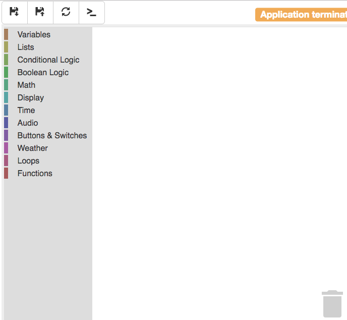
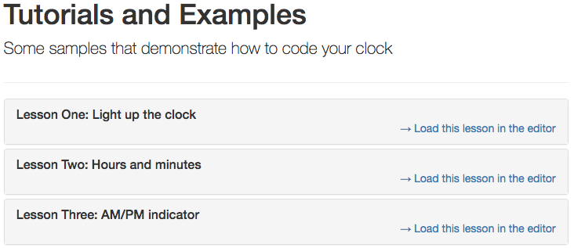

.
Your clock's display should now show "0:0!"
.
Your clock's display should now show "0:0!"
For this first lesson, let's just figure out how to use the Hack Clock IDE to change its code. In a web browser, open up the URL http://raspberrypi:9003/, where "raspberrypi" is actually the hostname or IP address of the Raspberry Pi that you will be using. Whoever set up your Raspberry Pi should have this info. Once you load this address into a web browser you should see the following:

The first thing we want to do is edit the clock's code. Click on the blue title that says "Edit the clock's code" and the Hack Clock IDE should appear - although right now the code editor is empty:
Let's load some code into our editor. Click on the "restore" button on the IDE (it's the second button from the left): . The Restore Code screen should come up:

Find the lesson "Lesson One: Light up the clock" in the list of code to restore,
then click on "Load this lesson in the editor." Once the code loads into your
IDE, click on the "save" button on the IDE (it's the button in the top-left of
the screen): .
Your clock's display should now show "0:0!"
So far we've been able to navigate the Hack Clock IDE and restore some code - now we have the basis for Lesson One: Change the Time